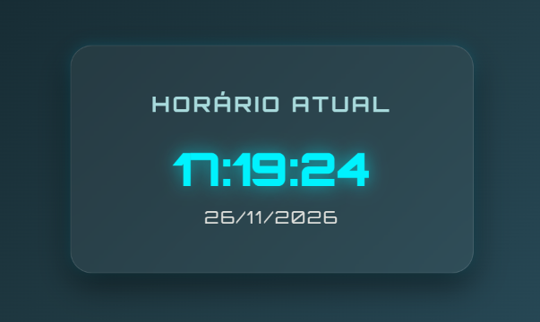

Relógio Digital Interativo
Aplicação web que exibe o horário em tempo real com atualização dinâmica.
Tecnologias: HTML, CSS, JavaScript e GitHub.
Acessar ProjetoEstudante de Ciência da Computação • 2º Período
Transformando lógica, dados e processos em soluções eficientes.
Ver Meus ProjetosMe chamo Gustavo Rodrigues, sou estudante de Ciência da Computação no Centro Universitário Maurício de Nassau (UNINASSAU) em Maceió - AL. Atualmente concilio a graduação com a rotina operacional na área de logística hospitalar, no Hospital Memorial Arthur Ramos, onde desenvolvo um olhar analítico voltado para organização e controle de processos.
Interesses na área de tecnologia: Engenharia de Software e Gestão e Análise de Dados.
Objetivos profissionais: Atuar no desenvolvimento de sistemas que ajudem a otimizar processos.

Aplicação web que exibe o horário em tempo real com atualização dinâmica.
Tecnologias: HTML, CSS, JavaScript e GitHub.
Acessar ProjetoProjeto de análise de dados ponta a ponta utilizando dataset do Kaggle, com foco em tratamento estatístico e visualização de indicadores imobiliários. Projeto desenvolvido como parte do programa SYNAPTA - Laboratório de Dados e Inteligência Artificial da UNINASSAU.
Tecnologias: Python (Pandas), Excel e Power BI.
Acessar ProjetoCentro Universitário Maurício de Nassau (UNINASSAU)
Em andamento
Estou aberto a oportunidades de trabalho e colaborações. Sinta-se à vontade para entrar em contato!